Prime Video Sports
Building a new home for sports.
Prime Video
Brand identity
Creative leadership / Sports documentaries
Prime Video’s first sports identity, with creative marketing spanning live NFL coverage and the All or Nothing documentary franchise.
The challenge
Introduce sports as a new part of Prime Video and give live coverage and sports documentaries a clear place on the platform.
The approach
Create a recognizable sports identity and build the creative marketing across Thursday Night Football and All or Nothing.
My contribution
I created Prime Video’s first sports brand identity, led creative marketing for its live sports business, and helped build the All or Nothing programming brand.
The work.
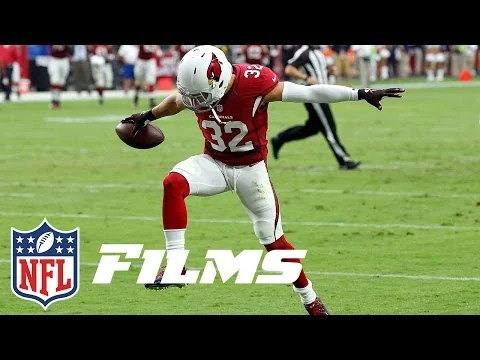
Play film / 01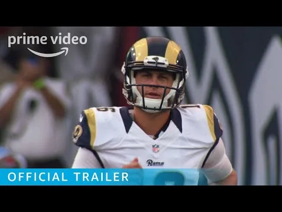
Play film / 02
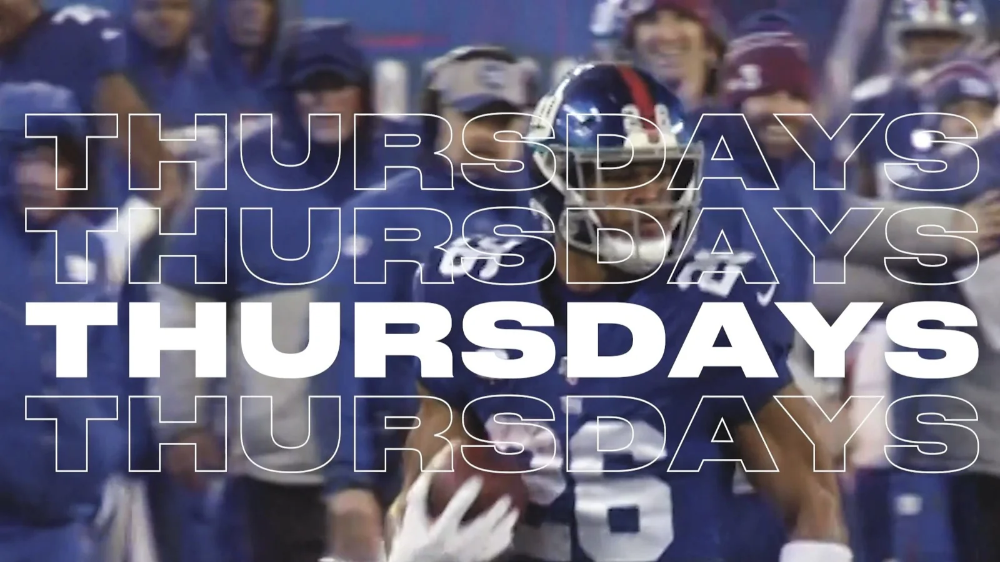

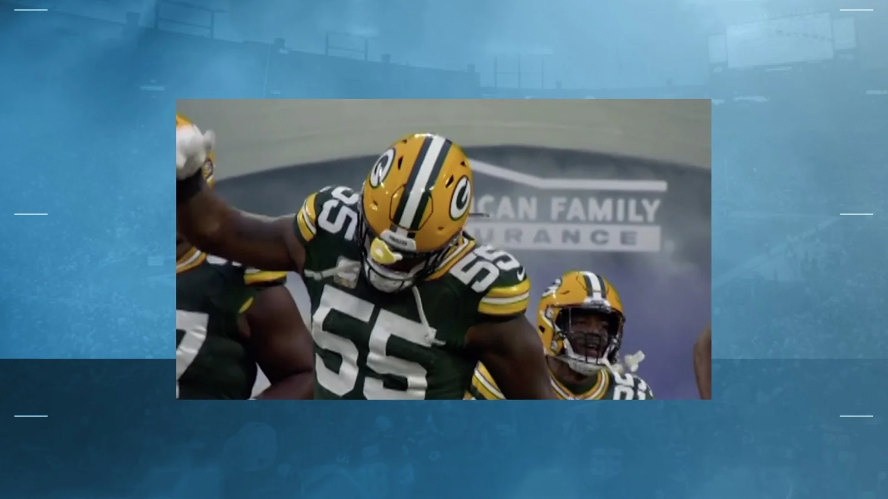

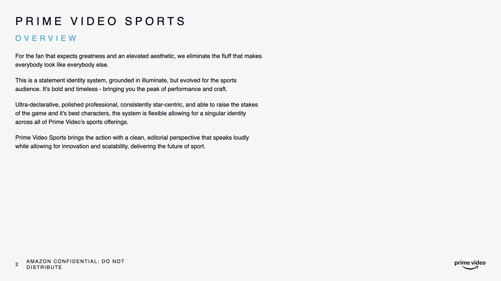

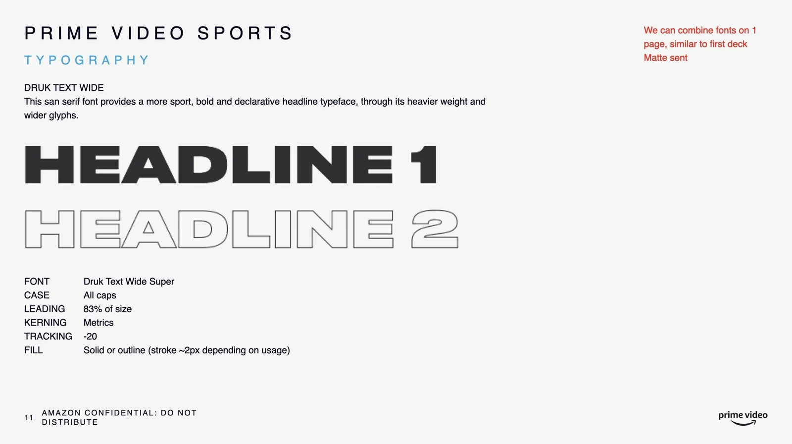

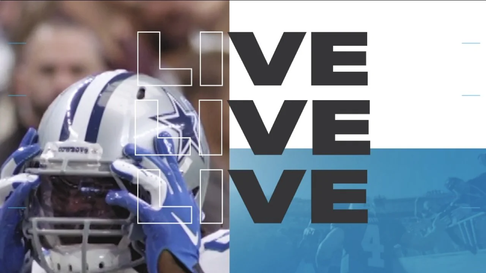

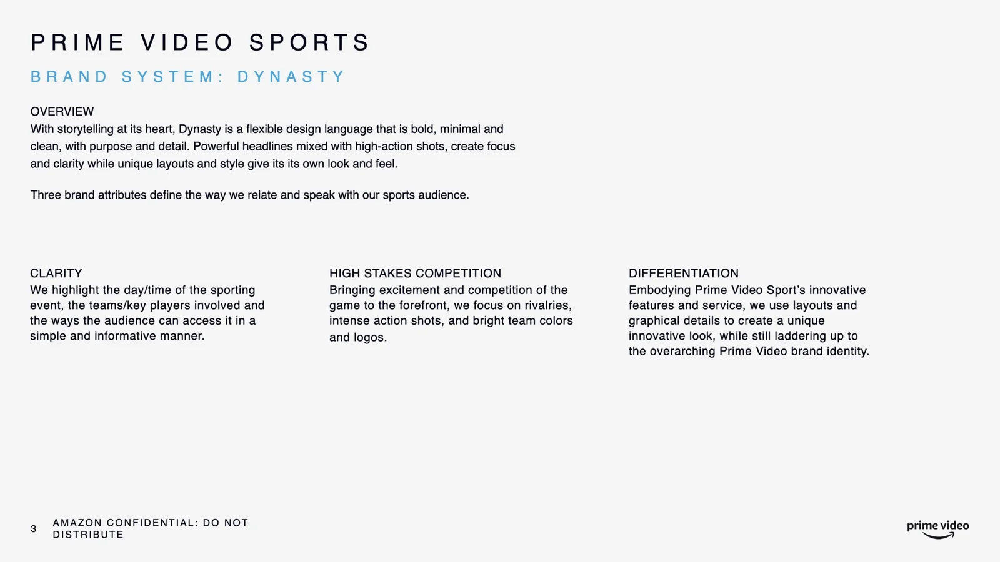

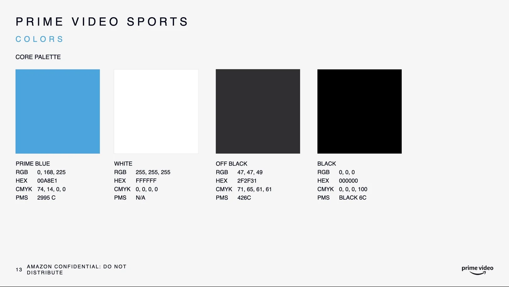

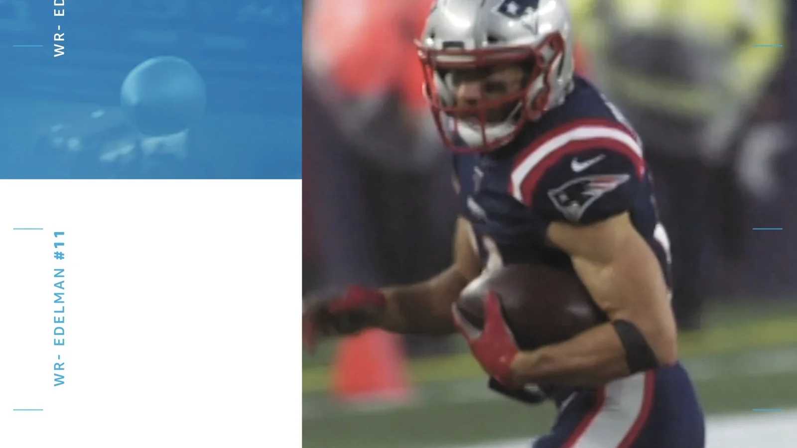

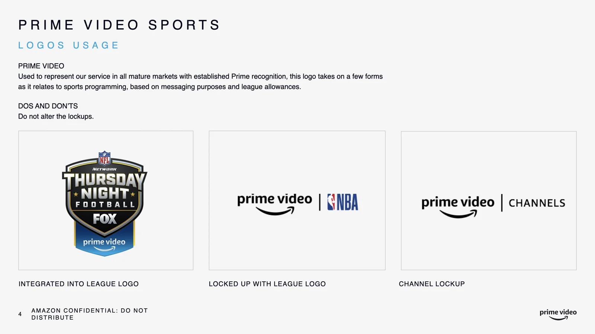

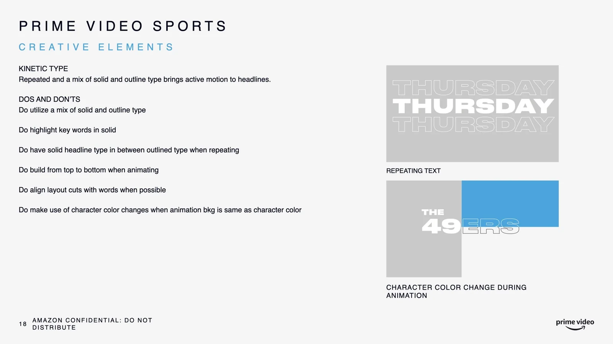

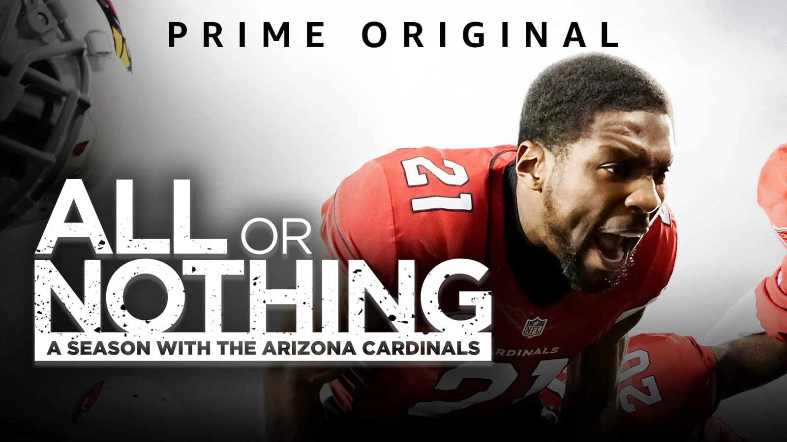

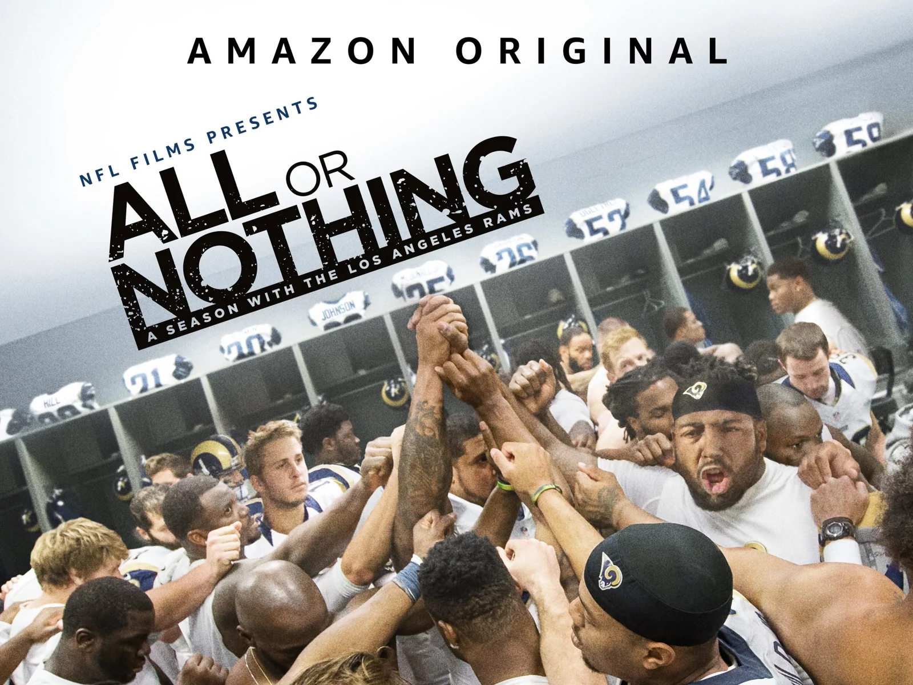

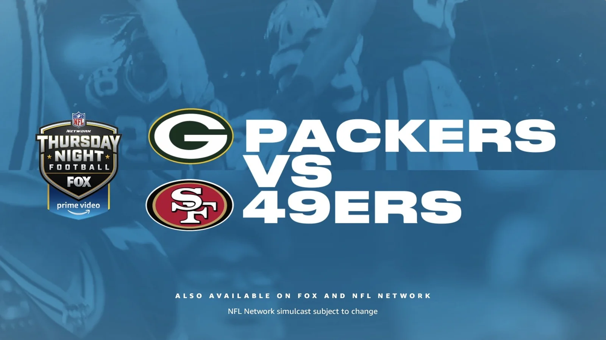

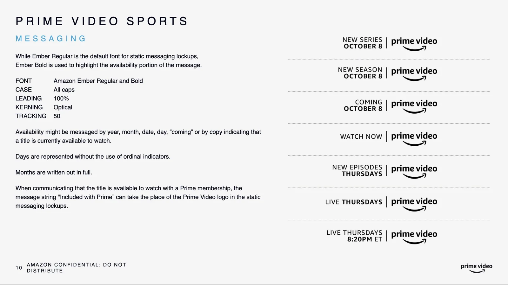

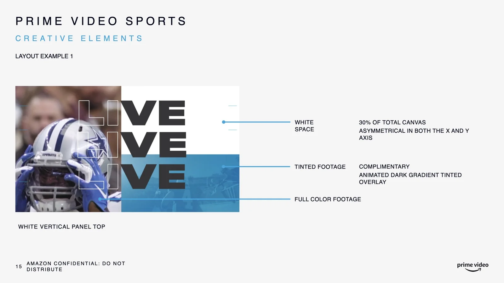